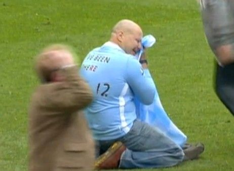

 As in known to all of us,soccer is the most popular one among all the sports in the world.In the mainwhile,soccer clubs can gain a lot of fans supporting them.
Football can have a major impact on mental health. It is thought to affect emotions, relationships, identity and self-esteem. In a recent study, one in four fans said football was one of the most important things in their lives.
Die-hard soccer fans hit the heights when their team wins and the depths of despair when they lose.Scientific studies show the love affiar with a team may be as emotionally intense as the real thing,and that team clashes have gladiatorial power.
(The picture shown beside is an aged crying in the pitch after Manchester City beated QPR and won the Premier Chanpionship,which is their first top Chanpionship in the recent 44 years.The game was a reverse which is quite exciting,so i think fans had suffered a lot.)
Benifits
If you become a die-hard soccer fan of one club,you may benifit a lot somehow.
When time is at a premium for most people, leisure activity and entertainment fulfils the psychological need to escape from the stresses and strains of life and go into another world for a period of time. The time set aside for football is often sacrosanct and provides an opportunity to play.
It has been suggested that the attraction of sports events over other forms of entertainment is the combination of comfort in ritual with unpredictable outcome. People can look forward to the comfort of the familiar with the thrill of the unknown.
The World Cup in particular may have a positive effect on mental health. One study found there was a reduction in numbers of emergency psychiatric admissions during and after World Cup finals.
Harm
Commentators have suggested that for some fans, supporting football provides an opportunity to re-enact the ritual of battle. However this can be taken too far and lead to serious acts of violence, differentiating the fan from the "football hooligan". The available evidence on hooligan offenders suggest that they are generally young, in their late teens or 20s, although some "leaders" are older. It has been suggested that initially much behaviour is simply ritualistic and non-violent verbal abuse and threats. However, "core hooligans" are more interested in fighting or "running" rival groups.
Heavy drinking too is often a key element in a "good day out". Many violent offences by football fans are related to alcohol.
(The picture shown below is a match chao happened in Germany bundesliga 2 recently.Hertha drew with second-division club Fortuna Dusseldorf 2-2 after fan interference and fireworks on the pitch forced the referee to halt the game three times. Hundreds of fans invaded the pitch 90 seconds before the final whistle. The referee led the players off the pitch and it took 20 minutes before they were able to return to play the final 90 seconds of added time.)
Take a positive attitude
Football only has a positive effect when it is kept in perspective. An over-reliance on or obsession with football can limit the development of other interests and have a negative impact on male/female relationships and may divert attention away from other family responsibilities.
Football might have an even more beneficial impact on mental health if more fans took to the field, as exercise is known to have a positive effect on our mental well-being.

{kind=link}
{kind=link}
{kind=link}
{kind=link}
{kind=link}